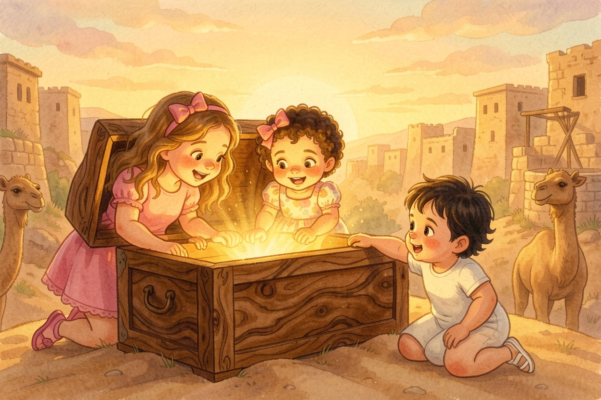
A Parasha Book · Parashat Chayei Sarah
חַיֵּי שָׂרָה
Ten Camels and a Girl at the Well
starring Aviya, Tzofia & Lielle
Meet the explorers

Aviya, Tzofia & Lielle are about to climb into Parashat Chayei Sarah (Genesis 23:1–25:18).
Everything on these pages comes straight from the pesukim — the plain meaning, the peshat.
Each picture page is followed by the words of the Torah it comes from, in Hebrew and English, and a question to look for in the text.
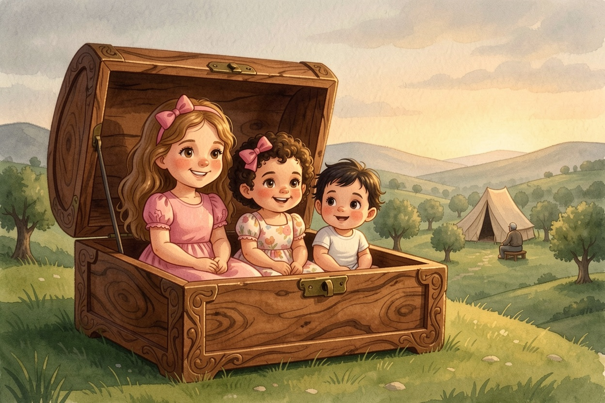
1The Life of Sarah
Bereshit 23:1-2The Life of Sarah
On Friday night, the Parsha Box on the Shabbat table opened slowly, all by itself, as if it knew this week would start quietly. The sisters climbed in, the box grew, and whoosh — it set down on a hill in Chevron. Aviya read: the life of Sarah was one hundred and twenty-seven years. Sarah died in Kiryat Arba, which is Chevron, in the land of Canaan. And Avraham came to mourn for Sarah and to cry for her. Tzofia leaned against her sister. Lielle was very still. "We saw her laugh last week," Tzofia whispered.
Look closely: How long was the life of Sarah?
One hundred and twenty-seven years (23:1).
From the Torah · Bereshit 23:1-2
1 וַיִּהְיוּ חַיֵּי שָׂרָה מֵאָה שָׁנָה וְעֶשְׂרִים שָׁנָה וְשֶׁבַע שָׁנִים שְׁנֵי חַיֵּי שָׂרָה׃
23:1 And Sara was a hundred and twenty seven years old: these were the years of Sara’s life.
2 וַתָּמָת שָׂרָה בְּקִרְיַת אַרְבַּע הִוא חֶבְרוֹן בְּאֶרֶץ כְּנָעַן וַיָּבֹא אַבְרָהָם לִסְפֹּד לְשָׂרָה וְלִבְכֹּתָהּ׃
23:2 And Sara died in Qiryat-arba; that is Ḥevron, in the land of Kena῾an: and Avraham came to mourn for Sara, and to weep for her.
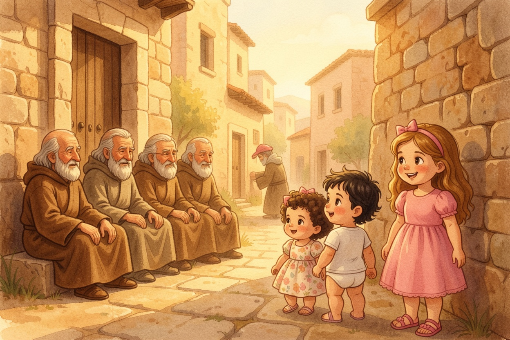
2A Cave at the End of the Field
Bereshit 23:3-11A Cave at the End of the Field
Avraham got up and spoke to the people of Chet, the people who lived there. "I am a stranger and a resident among you," he said. "Give me a place to bury." They answered: "You are a prince of God among us!" Avraham bowed to them and asked for one thing: the Cave of Machpelah, at the end of the field of a man named Efron. Efron said, "I give you the field, and I give you the cave in it." Tzofia said, "That's nice!" Aviya turned the page. "Wait and see what Avraham says."
Look closely: What did Avraham call himself when he spoke to the people of Chet?
"A stranger and a resident among you" (23:4).
From the Torah · Bereshit 23:3-11
3 וַיָּקָם אַבְרָהָם מֵעַל פְּנֵי מֵתוֹ וַיְדַבֵּר אֶל־בְּנֵי־חֵת לֵאמֹר׃
23:3 And Avraham stood up from before his dead, and spoke to the sons of Ḥet, saying,
4 גֵּר־וְתוֹשָׁב אָנֹכִי עִמָּכֶם תְּנוּ לִי אֲחֻזַּת־קֶבֶר עִמָּכֶם וְאֶקְבְּרָה מֵתִי מִלְּפָנָי׃
23:4 I am a stranger and a sojourner with you: give me a possession of a buryingplace with you, that I may bury my dead out of my sight.
5 וַיַּעֲנוּ בְנֵי־חֵת אֶת־אַבְרָהָם לֵאמֹר לוֹ׃
23:5 And the children of Ḥet answered Avraham, saying to him,
6 שְׁמָעֵנוּ אֲדֹנִי נְשִׂיא אֱלֹהִים אַתָּה בְּתוֹכֵנוּ בְּמִבְחַר קְבָרֵינוּ קְבֹר אֶת־מֵתֶךָ אִישׁ מִמֶּנּוּ אֶת־קִבְרוֹ לֹא־יִכְלֶה מִמְּךָ מִקְּבֹר מֵתֶךָ׃
23:6 Hear us, my lord: thou art a mighty prince among us: in the choice of our sepulchres bury thy dead; none of us shall with- hold from thee his tomb, but that thou mayst bury thy dead.
7 וַיָּקָם אַבְרָהָם וַיִּשְׁתַּחוּ לְעַם־הָאָרֶץ לִבְנֵי־חֵת׃
23:7 And Avraham stood up, and bowed himself to the people of the land, to the children of Ḥet.
8 וַיְדַבֵּר אִתָּם לֵאמֹר אִם־יֵשׁ אֶת־נַפְשְׁכֶם לִקְבֹּר אֶת־מֵתִי מִלְּפָנַי שְׁמָעוּנִי וּפִגְעוּ־לִי בְּעֶפְרוֹן בֶּן־צֹחַר׃
23:8 And he spoke with them, saying, If it be your mind that I should bury my dead out of my sight; hear me, and intreat for me to ῾Efron the son of Żoĥar,
9 וְיִתֶּן־לִי אֶת־מְעָרַת הַמַּכְפֵּלָה אֲשֶׁר־לוֹ אֲשֶׁר בִּקְצֵה שָׂדֵהוּ בְּכֶסֶף מָלֵא יִתְּנֶנָּה לִי בְּתוֹכְכֶם לַאֲחֻזַּת־קָבֶר׃
23:9 that he may give me the cave of Makhpela, which he has, which is in the end of his field; for the full price he shall give it me for a possession of a buryingplace amongst you.
10 וְעֶפְרוֹן יֹשֵׁב בְּתוֹךְ בְּנֵי־חֵת וַיַּעַן עֶפְרוֹן הַחִתִּי אֶת־אַבְרָהָם בְּאָזְנֵי בְנֵי־חֵת לְכֹל בָּאֵי שַׁעַר־עִירוֹ לֵאמֹר׃
23:10 And ῾Efron dwelt among the children of Ḥet: and ῾Efron the Ḥitti answered Avraham in the hearing of the children of Ḥet, even of all that went in at the gate of his city, saying,
11 לֹא־אֲדֹנִי שְׁמָעֵנִי הַשָּׂדֶה נָתַתִּי לָךְ וְהַמְּעָרָה אֲשֶׁר־בּוֹ לְךָ נְתַתִּיהָ לְעֵינֵי בְנֵי־עַמִּי נְתַתִּיהָ לָּךְ קְבֹר מֵתֶךָ׃
23:11 No, my lord, hear me: the field I give thee, and the cave that is in it, I give it thee; in the presence of the sons of my people I give it thee: bury thy dead.
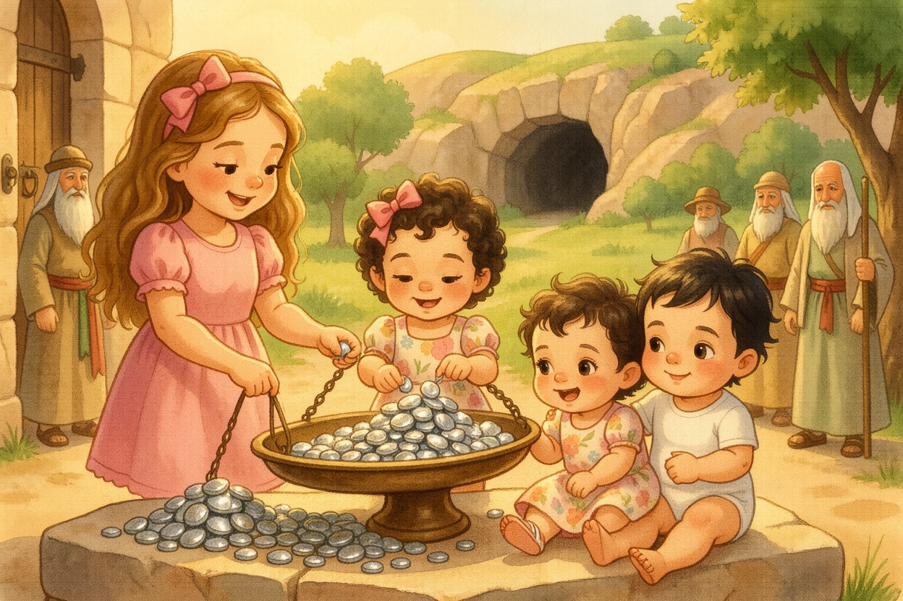
3Four Hundred Shekels
Bereshit 23:12-20Four Hundred Shekels
Avraham did not want it as a gift. "I will pay the price of the field," he said. "Take it from me." Efron said: "Land worth four hundred shekels of silver — what is that between you and me?" So Avraham weighed out four hundred shekels of silver, in front of everyone. Tzofia tried to count the shining pieces and got lost at twelve. The field and the cave and all the trees around its border became Avraham's. And Avraham buried Sarah there, in the Cave of Machpelah, near Mamre — that is Chevron.
Look closely: How much did Avraham pay for the field?
Four hundred shekels of silver (23:16).
From the Torah · Bereshit 23:12-20
12 וַיִּשְׁתַּחוּ אַבְרָהָם לִפְנֵי עַם הָאָרֶץ׃
23:12 And Avraham bowed himself down before the people of the land.
13 וַיְדַבֵּר אֶל־עֶפְרוֹן בְּאָזְנֵי עַם־הָאָרֶץ לֵאמֹר אַךְ אִם־אַתָּה לוּ שְׁמָעֵנִי נָתַתִּי כֶּסֶף הַשָּׂדֶה קַח מִמֶּנִּי וְאֶקְבְּרָה אֶת־מֵתִי שָׁמָּה׃
23:13 And he spoke to ῾Efron in the hearing of the people of the land, saying, But if thou wilt give it, I pray thee, hear me: I will give thee the price of the field; take it of me, and I will bury my dead there.
14 וַיַּעַן עֶפְרוֹן אֶת־אַבְרָהָם לֵאמֹר לוֹ׃
23:14 And ῾Efron answered Avraham, saying to him,
15 אֲדֹנִי שְׁמָעֵנִי אֶרֶץ אַרְבַּע מֵאֹת שֶׁקֶל־כֶּסֶף בֵּינִי וּבֵינְךָ מַה־הִוא וְאֶת־מֵתְךָ קְבֹר׃
23:15 My lord, hearken to me: a piece of land worth four hundred shekels of silver; what is that between me and thee? bury therefore thy dead.
16 וַיִּשְׁמַע אַבְרָהָם אֶל־עֶפְרוֹן וַיִּשְׁקֹל אַבְרָהָם לְעֶפְרֹן אֶת־הַכֶּסֶף אֲשֶׁר דִּבֶּר בְּאָזְנֵי בְנֵי־חֵת אַרְבַּע מֵאוֹת שֶׁקֶל כֶּסֶף עֹבֵר לַסֹּחֵר׃
23:16 And Avraham hearkened to ῾Efron; and Avraham weighed to ῾Efron the silver, which he had named in the hearing of the sons of Ḥet, four hundred shekels of silver, current money with the merchant.
17 וַיָּקָם שְׂדֵה עֶפְרוֹן אֲשֶׁר בַּמַּכְפֵּלָה אֲשֶׁר לִפְנֵי מַמְרֵא הַשָּׂדֶה וְהַמְּעָרָה אֲשֶׁר־בּוֹ וְכָל־הָעֵץ אֲשֶׁר בַּשָּׂדֶה אֲשֶׁר בְּכָל־גְּבֻלוֹ סָבִיב׃
23:17 And the field of ῾Efron, which was in Makhpela, which was before Mamre, the field, and the cave which was in it, and all the trees that were in the field, that were in all the borders round about, were made over
18 לְאַבְרָהָם לְמִקְנָה לְעֵינֵי בְנֵי־חֵת בְּכֹל בָּאֵי שַׁעַר־עִירוֹ׃
23:18 to Avraham for a possession in the presence of the children of Ḥet, before all that went in at the gate of his city.
19 וְאַחֲרֵי־כֵן קָבַר אַבְרָהָם אֶת־שָׂרָה אִשְׁתּוֹ אֶל־מְעָרַת שְׂדֵה הַמַּכְפֵּלָה עַל־פְּנֵי מַמְרֵא הִוא חֶבְרוֹן בְּאֶרֶץ כְּנָעַן׃
23:19 And after this, Avraham buried Sara his wife in the cave of the field of Makhpela before Mamre: the same is Ḥevron in the land of Kena῾an.
20 וַיָּקָם הַשָּׂדֶה וְהַמְּעָרָה אֲשֶׁר־בּוֹ לְאַבְרָהָם לַאֲחֻזַּת־קָבֶר מֵאֵת בְּנֵי־חֵת׃
23:20 And the field, and the cave that is in it, were made over to Avraham for a possession of a buryingplace by the sons of Ḥet.
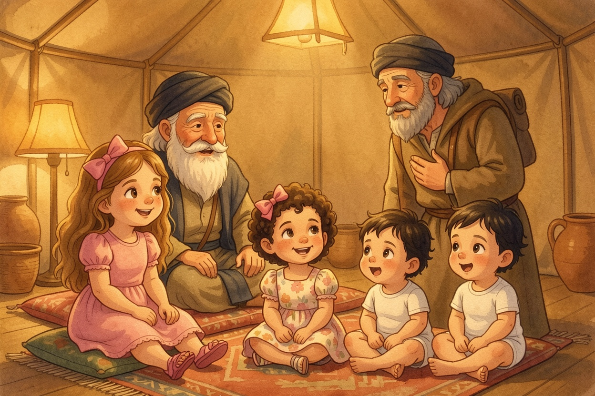
4A Job for the Servant
Bereshit 24:1-4A Job for the Servant
Avraham was old now, and Hashem had blessed him in everything. He called his servant — the oldest one in his house, who was in charge of everything he had. "Swear to me by Hashem," said Avraham, "that you will not take a wife for my son from the daughters of Canaan, where I live. Go to my land and my birthplace, and take a wife for my son, for Yitzchak." Tzofia asked, "How will he know which one?" Aviya shrugged and smiled. "Neither does he," she said. "Yet."
Look closely: Where did Avraham send his servant to find a wife for Yitzchak?
To his land and his birthplace (24:4).
From the Torah · Bereshit 24:1-4
1 וְאַבְרָהָם זָקֵן בָּא בַּיָּמִים וַיהוָה בֵּרַךְ אֶת־אַבְרָהָם בַּכֹּל׃
24:1 And Avraham was old, advanced in age: and the Lord had blessed Avraham in all things.
2 וַיֹּאמֶר אַבְרָהָם אֶל־עַבְדּוֹ זְקַן בֵּיתוֹ הַמֹּשֵׁל בְּכָל־אֲשֶׁר־לוֹ שִׂים־נָא יָדְךָ תַּחַת יְרֵכִי׃
24:2 And Avraham said to the eldest servant of his house, that ruled over all that he had, Put, I pray thee, thy hand under my thigh:
3 וְאַשְׁבִּיעֲךָ בַּיהוָה אֱלֹהֵי הַשָּׁמַיִם וֵאלֹהֵי הָאָרֶץ אֲשֶׁר לֹא־תִקַּח אִשָּׁה לִבְנִי מִבְּנוֹת הַכְּנַעֲנִי אֲשֶׁר אָנֹכִי יוֹשֵׁב בְּקִרְבּוֹ׃
24:3 and I will make thee swear by the Lord, the God of heaven, and the God of the earth, that thou shalt not take a wife to my son of the daughters of the Kena῾ani, among whom I dwell;
4 כִּי אֶל־אַרְצִי וְאֶל־מוֹלַדְתִּי תֵּלֵךְ וְלָקַחְתָּ אִשָּׁה לִבְנִי לְיִצְחָק׃
24:4 but thou shalt go to my country, and to my kindred, and take a wife to my son Yiżĥaq.
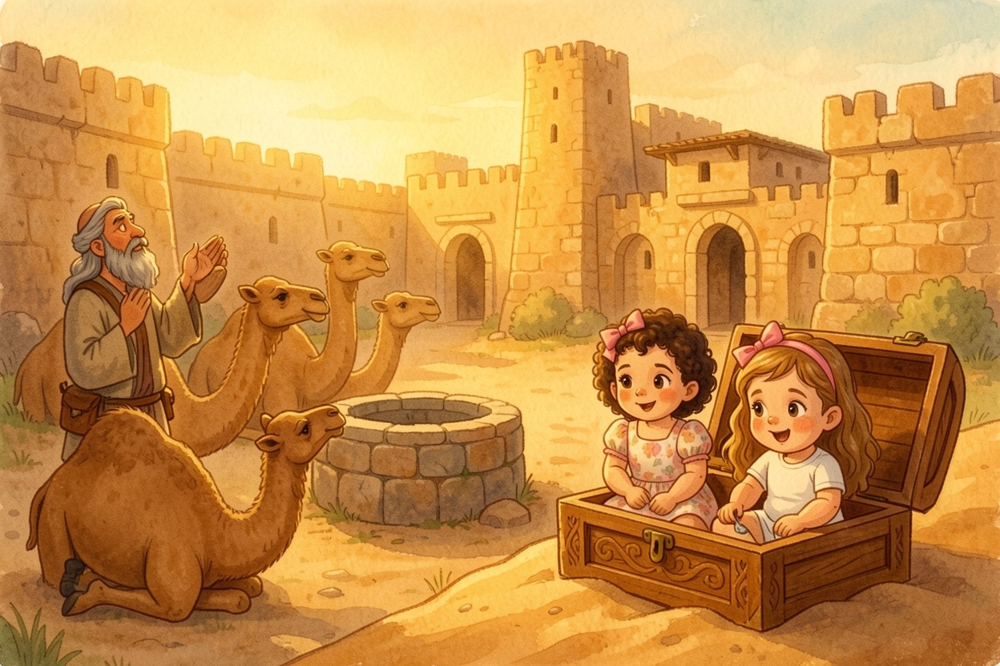
5Ten Camels and a Prayer
Bereshit 24:10-14Ten Camels and a Prayer
The servant took ten of his master's camels, loaded with good things, and traveled all the way to Aram Naharayim, to the city of Nachor. The sisters rode along in the Parsha Box. In the evening, the servant made the camels kneel outside the city by the well — the time when the women came out to draw water. Then he prayed: "Hashem, God of my master Avraham, let it happen for me today. The girl I ask, 'Please tip your jar so I can drink,' who says, 'Drink — and I'll water your camels too' — let her be the one." Tzofia whispered, "Ten camels drink a LOT."
Look closely: What did the servant ask Hashem for at the well?
That the girl who would say "Drink, and I will water your camels too" be the one for Yitzchak (24:14).
From the Torah · Bereshit 24:10-14
10 וַיִּקַּח הָעֶבֶד עֲשָׂרָה גְמַלִּים מִגְּמַלֵּי אֲדֹנָיו וַיֵּלֶךְ וְכָל־טוּב אֲדֹנָיו בְּיָדוֹ וַיָּקָם וַיֵּלֶךְ אֶל־אֲרַם נַהֲרַיִם אֶל־עִיר נָחוֹר׃
24:10 And the servant took ten camels of the camels of his master, and departed; for all the goods of his master were in his hand: and he arose, and went to Aram-naharayim, to the city of Naĥor.
11 וַיַּבְרֵךְ הַגְּמַלִּים מִחוּץ לָעִיר אֶל־בְּאֵר הַמָּיִם לְעֵת עֶרֶב לְעֵת צֵאת הַשֹּׁאֲבֹת׃
24:11 And he made his camels kneel down outside the city by a well of water at the time of evening, at the time that the women go out to draw water.
12 וַיֹּאמַר יְהוָה אֱלֹהֵי אֲדֹנִי אַבְרָהָם הַקְרֵה־נָא לְפָנַי הַיּוֹם וַעֲשֵׂה־חֶסֶד עִם אֲדֹנִי אַבְרָהָם׃
24:12 And he said, O Lord God of my master Avraham, I pray Thee, send me good speed this day, and show kindness to my master Avraham.
13 הִנֵּה אָנֹכִי נִצָּב עַל־עֵין הַמָּיִם וּבְנוֹת אַנְשֵׁי הָעִיר יֹצְאֹת לִשְׁאֹב מָיִם׃
24:13 Behold, I stand here by the well of water; and the daughters of the men of the city come out to draw water:
14 וְהָיָה הַנַּעֲרָ אֲשֶׁר אֹמַר אֵלֶיהָ הַטִּי־נָא כַדֵּךְ וְאֶשְׁתֶּה וְאָמְרָה שְׁתֵה וְגַם־גְּמַלֶּיךָ אַשְׁקֶה אֹתָהּ הֹכַחְתָּ לְעַבְדְּךָ לְיִצְחָק וּבָהּ אֵדַע כִּי־עָשִׂיתָ חֶסֶד עִם־אֲדֹנִי׃
24:14 and let it come to pass, that the girl to whom I shall say, Let down thy pitcher, I pray thee, that I may drink; and she shall say, Drink, and I will give thy camels drink also: let her be she that Thou hast appointed for Thy servant Yiżĥaq; and thereby shall I know that Thou hast shown kindness to my master.
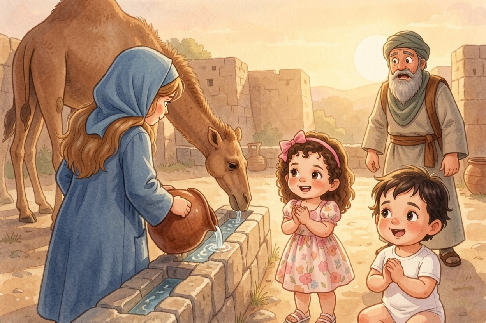
6Drink — and Your Camels Too!
Bereshit 24:15-20Drink — and Your Camels Too!
Before he had even finished praying — there came Rivka, the daughter of Betuel, with her jar on her shoulder! She went down to the spring, filled her jar, and came up. The servant ran to her: "Please let me sip a little water from your jar." "Drink, my lord," she said, and quickly lowered her jar and gave him a drink. Then she said, "I'll draw water for your camels too, until they've finished drinking." She emptied her jar into the trough and ran back to the well again and again, for all his camels. Tzofia counted every trip. Lielle clapped. "She said the exact words!" said Aviya.
Look closely: What did Rivka say after she gave the servant a drink?
"I will draw for your camels too, until they finish drinking" (24:19).
From the Torah · Bereshit 24:15-20
15 וַיְהִי־הוּא טֶרֶם כִּלָּה לְדַבֵּר וְהִנֵּה רִבְקָה יֹצֵאת אֲשֶׁר יֻלְּדָה לִבְתוּאֵל בֶּן־מִלְכָּה אֵשֶׁת נָחוֹר אֲחִי אַבְרָהָם וְכַדָּהּ עַל־שִׁכְמָהּ׃
24:15 And it came to pass, before he had done speaking, that, behold, Rivqa came out, who was born to Betu᾽el, son of Milka, the wife of Naĥor, Avraham’s brother, with her pitcher upon her shoulder.
16 וְהַנַּעֲרָ טֹבַת מַרְאֶה מְאֹד בְּתוּלָה וְאִישׁ לֹא יְדָעָהּ וַתֵּרֶד הָעַיְנָה וַתְּמַלֵּא כַדָּהּ וַתָּעַל׃
24:16 And the girl was very fair to look upon, a virgin, neither had any man known her: and she went down to the well, and filled her pitcher, and came up.
17 וַיָּרָץ הָעֶבֶד לִקְרָאתָהּ וַיֹּאמֶר הַגְמִיאִינִי נָא מְעַט־מַיִם מִכַּדֵּךְ׃
24:17 And the servant ran to meet her, and said, Let me, I pray thee, drink a little water of thy pitcher.
18 וַתֹּאמֶר שְׁתֵה אֲדֹנִי וַתְּמַהֵר וַתֹּרֶד כַּדָּהּ עַל־יָדָהּ וַתַּשְׁקֵהוּ׃
24:18 And she said, Drink, my lord: and she hastened, and let down her pitcher upon her hand, and gave him drink.
19 וַתְּכַל לְהַשְׁקֹתוֹ וַתֹּאמֶר גַּם לִגְמַלֶּיךָ אֶשְׁאָב עַד אִם־כִּלּוּ לִשְׁתֹּת׃
24:19 And when she had done giving him drink, she said, I will draw water for thy camels also, until they have done drinking.
20 וַתְּמַהֵר וַתְּעַר כַּדָּהּ אֶל־הַשֹּׁקֶת וַתָּרָץ עוֹד אֶל־הַבְּאֵר לִשְׁאֹב וַתִּשְׁאַב לְכָל־גְּמַלָּיו׃
24:20 And she hastened, and emptied her pitcher into the trough, and ran again to the well to draw water, and drew for all his camels.
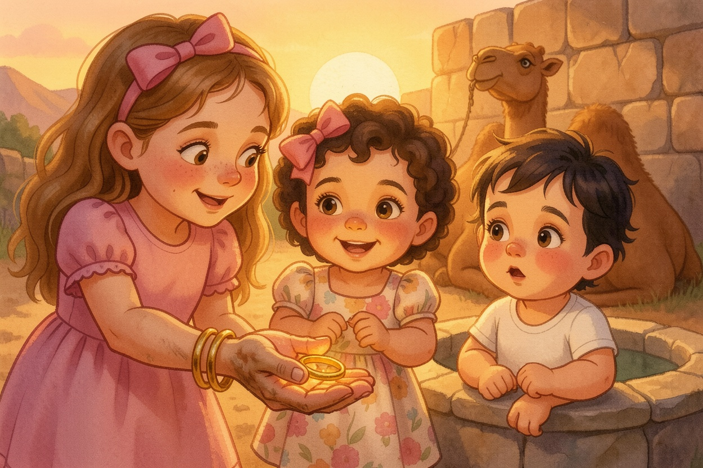
7A Gold Ring and Two Bracelets
Bereshit 24:21-27A Gold Ring and Two Bracelets
The man stood quietly, watching her, to know whether Hashem had made his journey succeed. When the camels finished drinking, he took out a gold nose ring weighing half a shekel and two gold bracelets weighing ten shekels. "Whose daughter are you?" he asked. "Is there room in your father's house for us to stay?" "I am the daughter of Betuel, the son of Milkah and Nachor," she said. "We have plenty of straw and food, and a place to stay." Then the man bowed down and blessed Hashem, who had not left His kindness and truth for his master. "Betuel!" said Aviya. "That's Avraham's family!"
Look closely: Whose daughter was Rivka?
Betuel's — the son of Milkah and Nachor, Avraham's brother (24:24).
From the Torah · Bereshit 24:21-27
21 וְהָאִישׁ מִשְׁתָּאֵה לָהּ מַחֲרִישׁ לָדַעַת הַהִצְלִיחַ יְהוָה דַּרְכּוֹ אִם־לֹא׃
24:21 And the man wondering at her held his peace, to know whether the Lord had made his journey prosperous or not.
22 וַיְהִי כַּאֲשֶׁר כִּלּוּ הַגְּמַלִּים לִשְׁתּוֹת וַיִּקַּח הָאִישׁ נֶזֶם זָהָב בֶּקַע מִשְׁקָלוֹ וּשְׁנֵי צְמִידִים עַל־יָדֶיהָ עֲשָׂרָה זָהָב מִשְׁקָלָם׃
24:22 And it came to pass, as the camels had done drinking, that the man took a golden earring of half a shekel weight, and two bracelets for her hands of ten shekels weight of gold;
23 וַיֹּאמֶר בַּת־מִי אַתְּ הַגִּידִי נָא לִי הֲיֵשׁ בֵּית־אָבִיךְ מָקוֹם לָנוּ לָלִין׃
24:23 and said, Whose daughter art thou? tell me, I pray thee: is there room in thy father’s house for us to lodge in?
24 וַתֹּאמֶר אֵלָיו בַּת־בְּתוּאֵל אָנֹכִי בֶּן־מִלְכָּה אֲשֶׁר יָלְדָה לְנָחוֹר׃
24:24 And she said to him, I am the daughter of Betu᾽el the son of Milka, whom she bore to Naĥor.
25 וַתֹּאמֶר אֵלָיו גַּם־תֶּבֶן גַּם־מִסְפּוֹא רַב עִמָּנוּ גַּם־מָקוֹם לָלוּן׃
24:25 And she said to him, We have both straw and provender enough, and room to lodge in.
26 וַיִּקֹּד הָאִישׁ וַיִּשְׁתַּחוּ לַיהוָה׃
24:26 And the man bowed down his head, and prostrated himself to the Lord.
27 וַיֹּאמֶר בָּרוּךְ יְהוָה אֱלֹהֵי אֲדֹנִי אַבְרָהָם אֲשֶׁר לֹא־עָזַב חַסְדּוֹ וַאֲמִתּוֹ מֵעִם אֲדֹנִי אָנֹכִי בַּדֶּרֶךְ נָחַנִי יְהוָה בֵּית אֲחֵי אֲדֹנִי׃
24:27 And he said, Blessed be the Lord God of my master Avraham, Who has not left my master destitute of His love and His truth: as for me, the Lord has guided me in the way to the house of my master’s brethren.
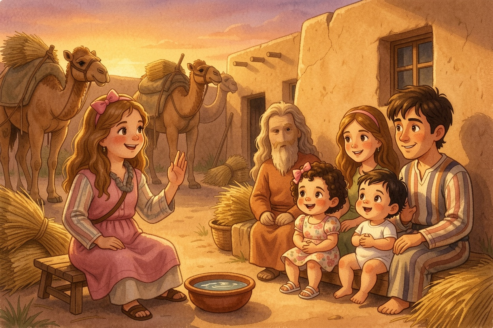
8Not Until I Tell
Bereshit 24:28-33Not Until I Tell
Rivka ran and told everyone at her mother's house. Her brother Lavan saw the ring and the bracelets and ran out to the man at the spring. "Come in, blessed of Hashem!" said Lavan. "Why are you standing outside? I've made the house ready, and a place for the camels." The camels were unloaded and given straw and food, and there was water to wash the travelers' feet. Then food was put in front of the servant — but he said, "I will not eat until I have said what I came to say." Tzofia's tummy rumbled. "I would eat first," she said.
Look closely: Why didn't the servant eat right away?
He would not eat until he had told them why he came (24:33).
From the Torah · Bereshit 24:28-33
28 וַתָּרָץ הַנַּעֲרָ וַתַּגֵּד לְבֵית אִמָּהּ כַּדְּבָרִים הָאֵלֶּה׃
24:28 And the girl ran, and told them of her mother’s house these things.
29 וּלְרִבְקָה אָח וּשְׁמוֹ לָבָן וַיָּרָץ לָבָן אֶל־הָאִישׁ הַחוּצָה אֶל־הָעָיִן׃
24:29 And Rivqa had a brother, and his name was Lavan: and Lavan ran out to the man, to the well.
30 וַיְהִי כִּרְאֹת אֶת־הַנֶּזֶם וְאֶת־הַצְּמִדִים עַל־יְדֵי אֲחֹתוֹ וּכְשָׁמְעוֹ אֶת־דִּבְרֵי רִבְקָה אֲחֹתוֹ לֵאמֹר כֹּה־דִבֶּר אֵלַי הָאִישׁ וַיָּבֹא אֶל־הָאִישׁ וְהִנֵּה עֹמֵד עַל־הַגְּמַלִּים עַל־הָעָיִן׃
24:30 And it came to pass, when he saw the earring and bracelets upon his sister’s hands, and when he heard the words of Rivqa his sister, saying, Thus spoke the man to me; that he came to the man; and, behold, he stood by the camels at the well.
31 וַיֹּאמֶר בּוֹא בְּרוּךְ יְהוָה לָמָּה תַעֲמֹד בַּחוּץ וְאָנֹכִי פִּנִּיתִי הַבַּיִת וּמָקוֹם לַגְּמַלִּים׃
24:31 And he said, Come in, thou blessed of the Lord; why dost thou stand outside? for I have prepared the house, and room for the camels.
32 וַיָּבֹא הָאִישׁ הַבַּיְתָה וַיְפַתַּח הַגְּמַלִּים וַיִּתֵּן תֶּבֶן וּמִסְפּוֹא לַגְּמַלִּים וּמַיִם לִרְחֹץ רַגְלָיו וְרַגְלֵי הָאֲנָשִׁים אֲשֶׁר אִתּוֹ׃
24:32 And the man came into the house: and he ungirded his camels, and gave straw and provender for the camels, and water to wash his feet, and the men’s feet that were with him.
33 ויישם [וַיּוּשַׂם] לְפָנָיו לֶאֱכֹל וַיֹּאמֶר לֹא אֹכַל עַד אִם־דִּבַּרְתִּי דְּבָרָי וַיֹּאמֶר דַּבֵּר׃
24:33 And there was set food before him to eat: but he said, I will not eat, until I have told my errand. And he said, Speak on.
Bereshit 24:50-58I Will Go
The servant told them everything — the promise, the prayer, the well. Lavan and Betuel answered: "This came from Hashem! Here is Rivka — take her and go." The servant bowed to the ground to Hashem, and brought out silver and gold jewelry and clothing for Rivka, and gifts for her brother and her mother. In the morning her family said, "Let her stay with us a few days — maybe ten." But the servant wanted to go. So they said, "Let's call the girl and ask her." "Will you go with this man?" And Rivka said: "I will go." Aviya read it again: "Elech." Just one word.
Look closely: What did Rivka answer when they asked her?
"I will go" — elech (24:58).
From the Torah · Bereshit 24:50-58
50 וַיַּעַן לָבָן וּבְתוּאֵל וַיֹּאמְרוּ מֵיְהוָה יָצָא הַדָּבָר לֹא נוּכַל דַּבֵּר אֵלֶיךָ רַע אוֹ־טוֹב׃
24:50 Then Lavan and Betu᾽el answered and said, The thing comes from the Lord: we cannot speak to thee bad or good.
51 הִנֵּה־רִבְקָה לְפָנֶיךָ קַח וָלֵךְ וּתְהִי אִשָּׁה לְבֶן־אֲדֹנֶיךָ כַּאֲשֶׁר דִּבֶּר יְהוָה׃
24:51 Behold, Rivqa is before thee, take her, and go, and let her be thy master’s son’s wife, as the Lord has spoken.
52 וַיְהִי כַּאֲשֶׁר שָׁמַע עֶבֶד אַבְרָהָם אֶת־דִּבְרֵיהֶם וַיִּשְׁתַּחוּ אַרְצָה לַיהוָה׃
24:52 And it came to pass, that, when Avraham’s servant heard their words, he prostrated himself to the earth before the Lord.
53 וַיּוֹצֵא הָעֶבֶד כְּלֵי־כֶסֶף וּכְלֵי זָהָב וּבְגָדִים וַיִּתֵּן לְרִבְקָה וּמִגְדָּנֹת נָתַן לְאָחִיהָ וּלְאִמָּהּ׃
24:53 And the servant brought out jewels of silver, and jewels of gold, and garments, and gave them to Rivqa: he gave also to her brother and to her mother precious things.
54 וַיֹּאכְלוּ וַיִּשְׁתּוּ הוּא וְהָאֲנָשִׁים אֲשֶׁר־עִמּוֹ וַיָּלִינוּ וַיָּקוּמוּ בַבֹּקֶר וַיֹּאמֶר שַׁלְּחֻנִי לַאדֹנִי׃
24:54 And they did eat and drink, he and the men that were with him, and tarried all night; and they rose up in the morning, and he said, Send me away to my master.
55 וַיֹּאמֶר אָחִיהָ וְאִמָּהּ תֵּשֵׁב הַנַּעֲרָ אִתָּנוּ יָמִים אוֹ עָשׂוֹר אַחַר תֵּלֵךְ׃
24:55 And her brother and her mother said, Let the girl stay with us a few days, at the least ten; after that she shall go.
56 וַיֹּאמֶר אֲלֵהֶם אַל־תְּאַחֲרוּ אֹתִי וַיהוָה הִצְלִיחַ דַּרְכִּי שַׁלְּחוּנִי וְאֵלְכָה לַאדֹנִי׃
24:56 And he said to them, Hinder me not, seeing the Lord has prospered my way; send me away that I may go to my master.
57 וַיֹּאמְרוּ נִקְרָא לַנַּעֲרָ וְנִשְׁאֲלָה אֶת־פִּיהָ׃
24:57 And they said, We will call the girl, and inquire at her mouth.
58 וַיִּקְרְאוּ לְרִבְקָה וַיֹּאמְרוּ אֵלֶיהָ הֲתֵלְכִי עִם־הָאִישׁ הַזֶּה וַתֹּאמֶר אֵלֵךְ׃
24:58 And they called Rivqa, and said to her, Wilt thou go with this man? And she said, I will go.
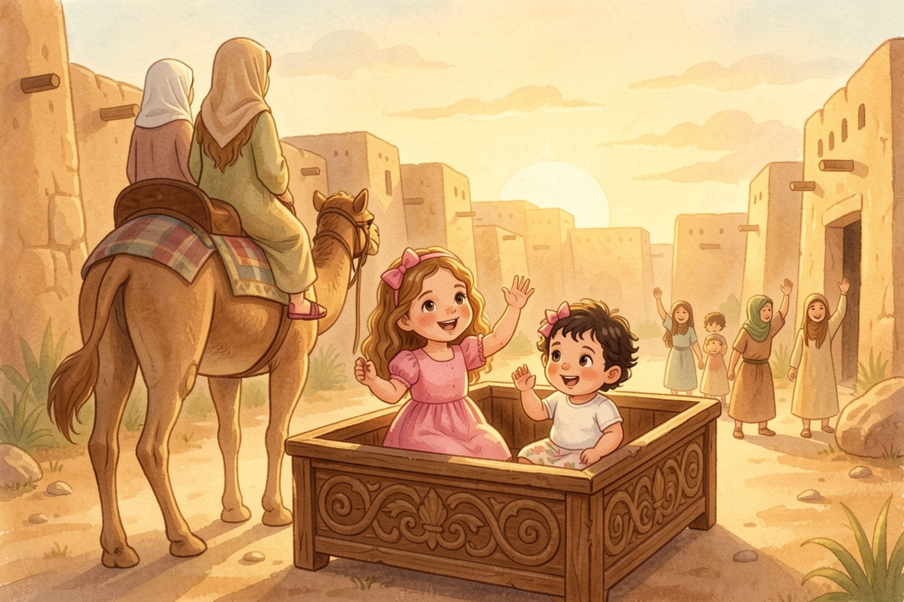
10Thousands of Ten-Thousands
Bereshit 24:59-61Thousands of Ten-Thousands
So they sent Rivka off with her nurse, and with the servant and his men. And they blessed Rivka: "Our sister, may you become thousands of ten-thousands!" Then Rivka and her maids got up, rode on the camels, and followed the man. The sisters rode right behind them in the Parsha Box. Tzofia waved goodbye to Rivka's family. Lielle bounced with every camel step. "Thousands of ten-thousands," said Tzofia. "Is that more than eleven?"
Look closely: What blessing did Rivka's family give her?
"Our sister, may you become thousands of ten-thousands" (24:60).
From the Torah · Bereshit 24:59-61
59 וַיְשַׁלְּחוּ אֶת־רִבְקָה אֲחֹתָם וְאֶת־מֵנִקְתָּהּ וְאֶת־עֶבֶד אַבְרָהָם וְאֶת־אֲנָשָׁיו׃
24:59 And they sent away Rivqa their sister, and her nurse, and Avraham’s servant, and his men.
60 וַיְבָרֲכוּ אֶת־רִבְקָה וַיֹּאמְרוּ לָהּ אֲחֹתֵנוּ אַתְּ הֲיִי לְאַלְפֵי רְבָבָה וְיִירַשׁ זַרְעֵךְ אֵת שַׁעַר שֹׂנְאָיו׃
24:60 And they blessed Rivqa, and said to her, Thou art our sister, be thou the mother of thousands of ten thousands, and let thy seed possess the gate of those which hate them.
61 וַתָּקָם רִבְקָה וְנַעֲרֹתֶיהָ וַתִּרְכַּבְנָה עַל־הַגְּמַלִּים וַתֵּלַכְנָה אַחֲרֵי הָאִישׁ וַיִּקַּח הָעֶבֶד אֶת־רִבְקָה וַיֵּלַךְ׃
24:61 And Rivqa, and her maids arose, and they rode upon the camels, and followed the man: and the servant took Rivqa, and went his way.
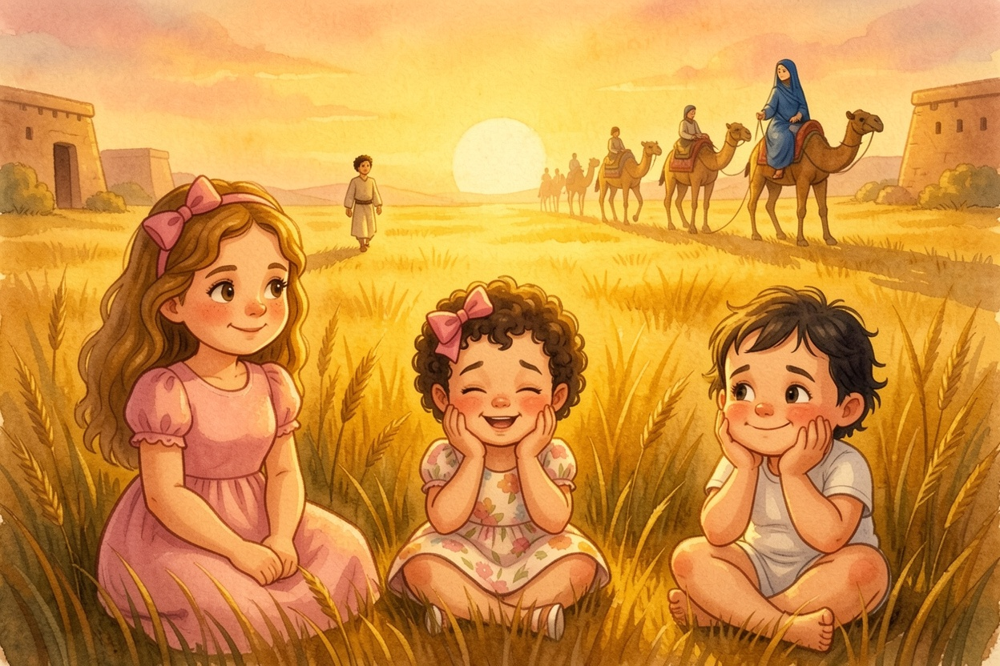
11Yitzchak in the Field
Bereshit 24:62-67Yitzchak in the Field
Yitzchak was living in the Negev. Toward evening he went out to the field to pray and think, and he lifted his eyes — and saw camels coming! Rivka lifted her eyes and saw Yitzchak, and she got down from the camel. "Who is that man walking in the field toward us?" she asked. "That is my master," said the servant. So she took her veil and covered herself. The servant told Yitzchak everything that had happened. Yitzchak brought Rivka into the tent of Sarah his mother, and she became his wife, and he loved her. And Yitzchak was comforted after his mother. Tzofia sighed happily.
Look closely: Into whose tent did Yitzchak bring Rivka?
The tent of Sarah his mother (24:67).
From the Torah · Bereshit 24:62-67
62 וְיִצְחָק בָּא מִבּוֹא בְּאֵר לַחַי רֹאִי וְהוּא יוֹשֵׁב בְּאֶרֶץ הַנֶּגֶב׃
24:62 And Yiżĥaq came from the way of Be᾽er-laĥay-ro᾽i; for he dwelt in the land of the Negev.
63 וַיֵּצֵא יִצְחָק לָשׂוּחַ בַּשָּׂדֶה לִפְנוֹת עָרֶב וַיִּשָּׂא עֵינָיו וַיַּרְא וְהִנֵּה גְמַלִּים בָּאִים׃
24:63 And Yiżĥaq went out to meditate in the field at the evening time: and he lifted up his eyes, and saw, and, behold, camels were coming.
64 וַתִּשָּׂא רִבְקָה אֶת־עֵינֶיהָ וַתֵּרֶא אֶת־יִצְחָק וַתִּפֹּל מֵעַל הַגָּמָל׃
24:64 And Rivqa lifted up her eyes, and when she saw Yiżĥaq, she descended from the camel.
65 וַתֹּאמֶר אֶל־הָעֶבֶד מִי־הָאִישׁ הַלָּזֶה הַהֹלֵךְ בַּשָּׂדֶה לִקְרָאתֵנוּ וַיֹּאמֶר הָעֶבֶד הוּא אֲדֹנִי וַתִּקַּח הַצָּעִיף וַתִּתְכָּס׃
24:65 And she said to the servant, What man is this that walks in the field to meet us? And the servant said, It is my master: therefore she took her veil, and covered herself.
66 וַיְסַפֵּר הָעֶבֶד לְיִצְחָק אֵת כָּל־הַדְּבָרִים אֲשֶׁר עָשָׂה׃
24:66 And the servant told Yiżĥaq all the things that he had done.
67 וַיְבִאֶהָ יִצְחָק הָאֹהֱלָה שָׂרָה אִמּוֹ וַיִּקַּח אֶת־רִבְקָה וַתְּהִי־לוֹ לְאִשָּׁה וַיֶּאֱהָבֶהָ וַיִּנָּחֵם יִצְחָק אַחֲרֵי אִמּוֹ׃
24:67 And Yiżĥaq brought her into his mother Sara’s tent, and took Rivqa, and she became his wife; and he loved her: and Yiżĥaq was comforted after his mother’s death.
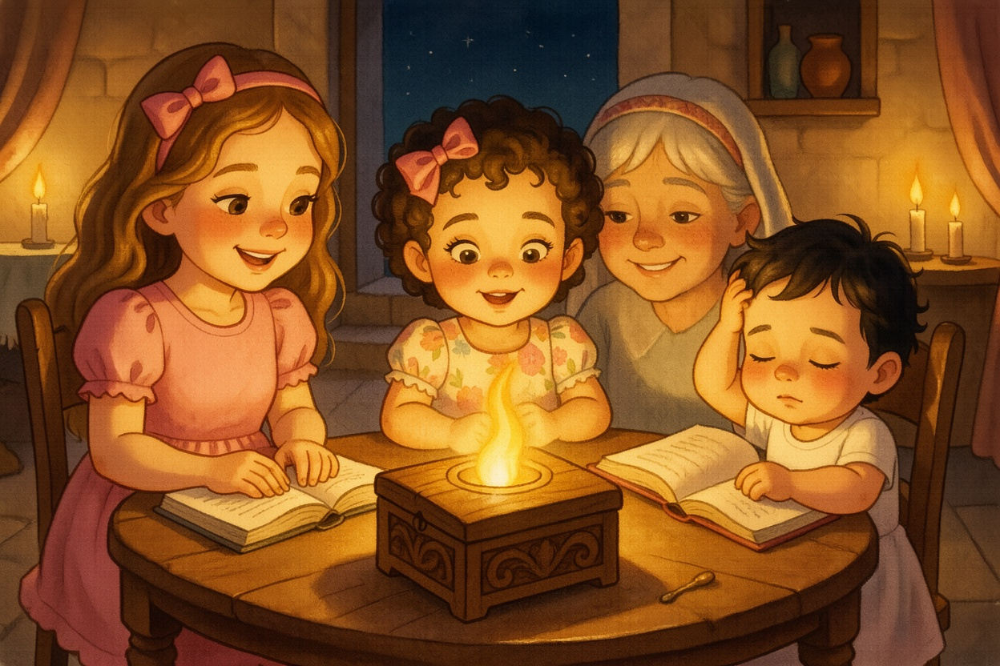
12Yitzchak and Yishmael
Bereshit 25:7-11Yitzchak and Yishmael
Avraham lived one hundred and seventy-five years, a good long life. His sons, Yitzchak and Yishmael, buried him in the Cave of Machpelah — the field Avraham had bought — next to Sarah. After that, God blessed Yitzchak, his son. Aviya closed the Chumash. The sisters climbed back into the Parsha Box, and whoosh — they were home at the Shabbat table, and the box was small again. Tzofia rubbed her eyes. "Next week," said Aviya, "Rivka has twins!"
Look closely: Who buried Avraham?
His sons, Yitzchak and Yishmael (25:9).
From the Torah · Bereshit 25:7-11
7 וְאֵלֶּה יְמֵי שְׁנֵי־חַיֵּי אַבְרָהָם אֲשֶׁר־חָי מְאַת שָׁנָה וְשִׁבְעִים שָׁנָה וְחָמֵשׁ שָׁנִים׃
25:7 And these are the days of the years of Avraham’s life which he lived, a hundred and seventy five years.
8 וַיִּגְוַע וַיָּמָת אַבְרָהָם בְּשֵׂיבָה טוֹבָה זָקֵן וְשָׂבֵעַ וַיֵּאָסֶף אֶל־עַמָּיו׃
25:8 Then Avraham expired, and died in a good old age, an old man, and full of years; and was gathered to his people.
9 וַיִּקְבְּרוּ אֹתוֹ יִצְחָק וְיִשְׁמָעֵאל בָּנָיו אֶל־מְעָרַת הַמַּכְפֵּלָה אֶל־שְׂדֵה עֶפְרֹן בֶּן־צֹחַר הַחִתִּי אֲשֶׁר עַל־פְּנֵי מַמְרֵא׃
25:9 And his sons Yiżĥaq and Yishma᾽el buried him in the cave of Makhpela, in the field of ῾Efron the son of Żoĥar the Ḥittite, which is before Mamre;
10 הַשָּׂדֶה אֲשֶׁר־קָנָה אַבְרָהָם מֵאֵת בְּנֵי־חֵת שָׁמָּה קֻבַּר אַבְרָהָם וְשָׂרָה אִשְׁתּוֹ׃
25:10 the field which Avraham purchased of the sons of Ḥet: there was Avraham buried, and Sara his wife.
11 וַיְהִי אַחֲרֵי מוֹת אַבְרָהָם וַיְבָרֶךְ אֱלֹהִים אֶת־יִצְחָק בְּנוֹ וַיֵּשֶׁב יִצְחָק עִם־בְּאֵר לַחַי רֹאִי׃
25:11 And it came to pass after the death of Avraham, that God blessed his son Yiżĥaq; and Yiżĥaq dwelt by Be᾽er-laĥay-ro᾽i.
The End
Three sisters ride the Parsha Box to the well — and meet Rivka. Read it again this Shabbat — and see how much more you can find in the pesukim.
Pesukim from Sefaria (Tanach with Nikkud · The Koren Jerusalem Bible). Illustrations made with FLUX.2 [klein]. Peshat fidelity checked with Jev.